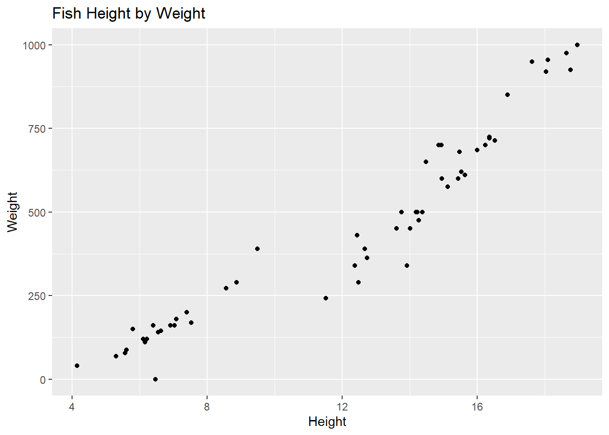
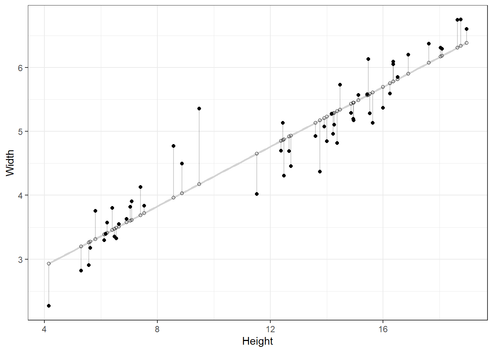
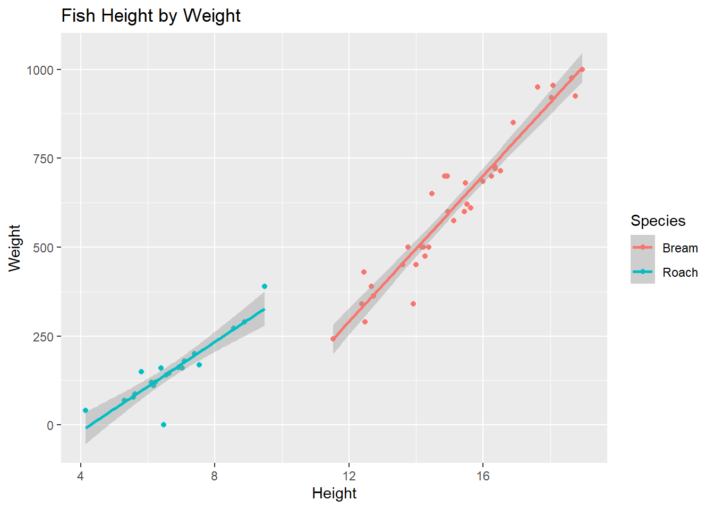

Modeling Introduction
fish <- read_csv("data/Fish.csv")For this activity, we will be working with a Fish data set. This data set is a record of 2 common different fish species in fish market sales. Documentation of the variables can be seen below:
| variable | description |
|---|---|
Species |
species name of fish |
Weight |
weight of fish in grams |
Length1 |
vertical length in cm |
Length2 |
diagonal length in cm |
Length3 |
cross length in cm |
Height |
height in cm |
Width |
diagonal width in cm |
We are going to investigate the relationship between a fish’s height and weight. Below, create an appropriate plot to investigate this relationship. Add appropriate labels to the plot.
fish |>
ggplot(
aes(x = Height, y = Weight)
) +
geom_point() +
labs(
title = "Fish Height by Weight")
- (2-min) If you were to draw a a straight line to best represent the relationship between a fish’s height and width, how would you do it?
Start from the bottom and go up Identify the first and last point and draw a line through most the others
- Now, let R draw the line for us. Please refer to the documentation here: https://ggplot2.tidyverse.org/reference/geom_smooth.html. Specifically, refer to the
methodsection.
fish |>
ggplot(
aes(x = Height, y = Weight)
) +
geom_point() +
geom_smooth(method = "lm") +
labs(
title = "Fish Height by Weight")`geom_smooth()` using formula 'y ~ x'
- What types of questions can this plot help answer?
Is there a relationship between fish height and weight?
Predict
- (2-min) We can use this line to make predictions. Predict what you think the width of a fish would be with a height of 10 cm. 15cm. 20cm. Which prediction is considered extrapolation?
At 10cm, we estimate a weight of 375 grams At 15cm, we estimate a weight of 600 grams At 20cm, we estimate a weight of 975 grams
- Brainstorm. How was this line created?
R probably created a line that best fit the data….but how and what does that mean?
- What is a residual?
The difference between what we observe and what our model predicts
- Demo:
#Modeling Code! More on this Monday!
fit <- lm(Width ~ Height, data = fish)
fish$predicted <- predict(fit)
fish$residuals <- residuals(fit)
fish |>
ggplot(aes(x = Height, y = Width)) +
geom_smooth(method = "lm", se = FALSE, color = "lightgrey") +
geom_segment(aes(xend = Height, yend = predicted), alpha = .2) +
geom_point() +
geom_point(aes(y = predicted), shape = 1) +
theme_bw() `geom_smooth()` using formula 'y ~ x'
Now we know how the line is fit…. so what’s the line?
fish |>
ggplot(
aes(x = Height, y = Weight)
) +
geom_point() +
geom_smooth(method = "lm", fullrange = T) +
labs(
title = "Fish by Height and Width"
) +
xlim(0,20)
summary(fit)- (2-min) Using the line, predict what you think the width of a fish would be with a height of 10 cm. 15cm. 20cm.
\(\hat{weight}\) = 1.96 + 0.2310 \(\hat{weight}\) = 1.96 + 0.2315 \(\hat{weight}\) = 1.96 + 0.23*20
- What is the notation of our line?
$$
= 1.96 +0.23*height
$$
Correlation
We can also assess correlation between two quantitative variables.
What is correlation? What is correlation bounded by?
Strength and direction of a linear relationship
r = [-1, 1]
What is the correlation between Height and Weight?
Height Weight
Height 1.0000000 0.9537966
Weight 0.9537966 1.0000000Are you good at guessing? Give it a try!
https://www.rossmanchance.com/applets/2021/guesscorrelation/GuessCorrelation.html
Modeling a third variable
Does the relationship change by species? Plot two separate straight lines by Bream and Roach species of fish below.
fish |>
ggplot(
aes(x = Height, y = Weight, color = Species)
) +
geom_point() +
geom_smooth(method = "lm") +
labs(
title = "Fish Height by Weight")`geom_smooth()` using formula 'y ~ x'
- We can fit more models than just a straight line. Change the following code below to read
method = loess. What is different from the plot created before?
The line isn’t straight!
fish |>
ggplot(
aes(x = Height, y = Width)
) +
geom_point() +
geom_smooth(method = "loess") +
labs(
title = "Fish by Height and Width"
)